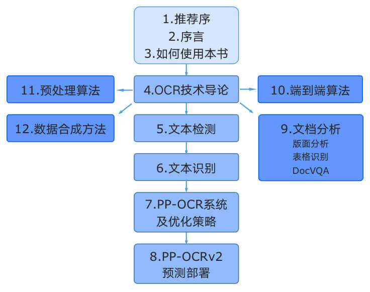

资源
https://pan.baidu.com/s/1e3Iu69dMDE_A38qAMgvJhg 提取码: obf3
2 序言

3 如何使用本书
教你怎么安装 PaddleOCR。
- ~~paddlepaddle CPU 版本（智算中心的 NPU 连华为工作人员都搞不定，只好用 CPU 了）~~还是寄，绝！
1 | |
paddlepaddle GPU 版本（就在自己的 Ubuntu 下装了）寄了
1 | |
- 安装 paddleocr
1 | |
安装 Jupyter Notebook：
1 | |
运行 Jupyter Notebook：
1 | |
会得到一串 url，用 Windows 下的浏览器打开它：
从 https://github.com/PaddlePaddle/PaddleOCR 里加载仓库，然后：
1 | |
4 OCR 技术导论
4.1 OCR 技术的应用场景
目前常说的 OCR 一般指场景文字识别（Scene Text Recognition，STR），主要面向自然
场景。
4.2 OCR 前沿算法
4.2.1 文本检测
4.2.2 文本识别
规则文本识别的算法根据解码方式的不同可以大致分为基于 CTC 和 Sequence2Sequence 两种，将网络学习到的序列特征转化为最终的识别结果的处理方式不同。
CTC 全称 Connectionist temporal classification，是一种常用在语音识别、文本识别等领域的算法，用来解决输入和输出序列长度不一、无法对齐的问题。
4.2.3 文档结构化识别
- 版面分析
- 表格识别
- 关键信息提取（KIE）
4.3.2 产业级 OCR 开发套件 PaddleOCR
- 模型算法
- 4 种文本检测算法
- 8 种文本识别算法
- 1 种端到端文本识别算法
- 预训练模型库
- PP-OCR，包含了 3 个模块，分别是：文本检测模块、检测框矫正模块、文本识别模块
- PP-Structure，支持版面分析（layout analysis）、表格识别（table recognition）、文档视觉问答（DocVQA）三种子任务
- 工业级部署
- 基于 Paddle Inference 的服务器端预测方案
- 数据工具
- 半自动数据标注工具 PPOCRLabel
- 数据合成工具 Style-Text
5 文本检测
5.1 文本检测方法介绍
5.1.1 基于回归的文本检测
基于回归文本检测方法和目标检测算法的方法相似，文本检测方法只有两个类别，图像中的文本视为待检测的目标，其余部分视为背景。
-
水平文本检测
-
TextBoxes
-
CTPN
-
-
任意角度文本检测
- TextBoxes++
- EAST
- MOST
-
弯曲文本检测
- CTD
- LOMO
- Contournet
- PCR
5.1.2 基于分割的文本检测
基于回归的方法虽然在文本检测上取得了很好的效果，但是对解决弯曲文本往往难以得到平滑的文本包围曲线，并且模型较为复杂不具备性能优势。于是研究者们提出了基于图像分割的文本分割方法，先从像素层面做分类，判别每一个像素点是否属于一个文本目标，得到文本区域的概率图，通过后处理方式得到文本分割区域的包围曲线。
此类方法通常是基于分割的方法实现文本检测，基于分割的方法对不规则形状的文本检测有着天然的优势。
基于分割的文本检测方法主体思想为，通过分割方法得到图像中文本区域，再利用 opencv，polygon 等后处理得到文本区域的最小包围曲线。
- Pixellink
- MSR
- PSENet
- Seglink++
- PAN
- DBNet，针对基于分割的方法需要使用阈值进行二值化处理而导致后处理耗时的问题
- FCENet，将文本包围曲线用傅立叶变换的参数表示
5.2 文本检测算法 DBNet 实战
5.2.1 快速使用
wsl2 下安装失败，我的 CUDA 版本太新了。
安装 paddleocr whl 包：
1 | |
命令行调用文本检测模型预测图像 ./test.jpg：
1 | |
然后就会喜提错误 ImportError: libcudart.so.10.2: cannot open shared object file: No such file or directory。因为自己的 CUDA 是 11.5 的，没有 10.2 的 libcudart.so.10.2。
从 报错解决：libcudart.so.10.2: cannot open shared object file: No such file or directory_Love 绘梨衣的 Mr.lu 的博客-CSDN 博客 里下载 libcudart.so.10.2，并把它放到 cuda 的安装目录中。
1 | |
配置 $LD_LIBRARY_PATH：
1 | |
发现这个电脑连 CUDNN 都没装？giao
从 cuDNN Download | NVIDIA Developer 下载 CUDNN，还必须是 10.2 的，得到 cudnn-10.2-linux-x64-v7.6.5.32.tgz，解压之：
1 | |
然后复制这些文件到 CUDA 的目录下：
1 | |
5.2.2 DBNet 算法详解
DB 文本检测模型可以分为三个部分：
- Backbone 网络，负责提取图像的特征
- FPN 网络，特征金字塔结构增强特征
- Head 网络，计算文本区域概率图
6 文本识别
根据实际场景可以把文本识别任务分为两个大类：
- 规则文本识别：主要指印刷字体、扫描文本等，认为文本大致处在水平线位置
- 不规则文本识别：往往出现在自然场景中，且由于文本曲率、方向、变形等方面差异巨大，文字往往不在水平位置，存在弯曲、遮挡、模糊等问题。
6.1 文本识别方法介绍
- 算法流程
- 图像预处理
- 字符分割
- 字符识别
6.1.1 规则文本识别
- CTC
- CRNN
- Seq2Seq
6.1.2 不规则文本识别
- 基于矫正，利用一些视觉变换模块，将非规则的文本尽量转换为规则文本，然后使用常规方法进行识别。
- RARE
- 基于 Attention，主要关注的是序列之间各部分的相关性，该方法最早在机器翻译领域提出，认为在文本翻译的过程中当前词的结果主要由某几个单词影响的，因此需要给有决定性的单词更大的权重。
- R^2AM
- 基于分割，基于分割的方法是将文本行的各字符作为独立个体，相比与对整个文本行做矫正后识别，识别分割出的单个字符更加容易。
- FCN
- 基于 Transformer
- SRN
- NRTR
- SRACN
6.2 文本识别算法 CRNN 实战
7 PP-OCR 系统及优化策略
7.1.1 PP-OCR 系统与优化策略简介
- 使用文本检测方法，获取文本区域多边形信息（PP-OCR 中文本检测使用的是 DBNet，因此获取的是四点信息）。
- 对上述文本多边形区域进行裁剪与透视变换校正，将文本区域转化成矩形框，再使用方向分类器对方向进行校正。
- 基于包含文字区域的矩形框进行文本识别，得到最终识别结果。